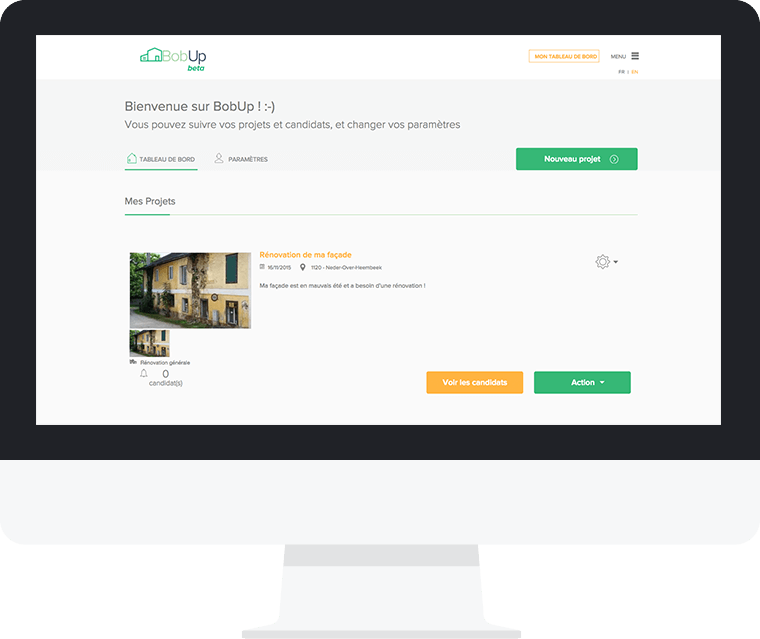


<!DOCTYPE html>
<html lang="en">
<head>
    <meta charset="utf-8" />
    <meta name="viewport" content="user-scalable=no, width=device-width, initial-scale=1, maximum-scale=1">
    <meta name="format-detection" content="telephone=no">
    <meta name="format-detection" content="address=no">
    <meta name="description" content="We are a web agency based in Brussels. Our passion drives us to create crafted website and amazing marketing campaign.">
    <link href="https://plus.google.com/110588193653496813331" rel="publisher" />

    <title>Bobup Case</title>
    <style>
        .preloader{
            position: fixed;
            top: 0;
            left: 0;
            bottom: 0;
            right: 0;
            z-index: 3;
        }
        .preloader:after,
        .preloader:before{
            z-index: 1;
            position: absolute;
            background: #fff;
            content: '';
            width: 51%;
            top: 0;
            bottom: 0;
            -webkit-transition: width 500ms ease-in-out;
            transition: width 500ms ease-in-out;
        }
        .preloader:after{
            left: 0;
        }
        .preloader:before{
            right: 0;
        }
        .preloader_loaded:after,
        .preloader_loaded:before{
            width: 0;
        }
        .preloader > div {
            display: block;
            position: absolute;
            left: 50%;
            top: 50%;
            width: 200px;
            height: 200px;
            margin: -100px 0 0 -100px;
            border-radius: 50%;
            border: 1px solid #fff;
            z-index: 2;
            -webkit-transition: opacity 500ms ease-in-out;
            transition: opacity 500ms ease-in-out;
        }

        .preloader_loaded > div {
            opacity: 0;
        }

        .preloader > div canvas {
            top: -2px;
            left: -2px;
            position: relative;
        }

        .preloader > img {
            position: absolute;
            left: 50%;
            top: 50%;
            margin: -30px 0 0 -52px;
            z-index: 3;
            -webkit-transition: opacity 500ms ease-in-out;
            transition: opacity 500ms ease-in-out;
        }
        .preloader_loaded > img,
        .preloader_loaded > div{
            opacity: 0;
        }
        @-webkit-keyframes spin {
            0% {
                -webkit-transform: rotate(0deg);
            }
            100% {
                -webkit-transform: rotate(360deg);
            }
        }
        @keyframes  spin {
            0% {
                transform: rotate(0deg);
            }
            100% {
                transform: rotate(360deg);
            }
        }

        @-webkit-keyframes spin-reverse {
            0% {
                -webkit-transform: rotate(0deg);
            }
            100% {
                -webkit-transform: rotate(-360deg);
            }
        }
        @keyframes  spin-reverse {
            0% {
                transform: rotate(0deg);
            }
            100% {
                transform: rotate(-360deg);
            }
        }
    </style>
    <link rel="stylesheet" href="css/inner-paralax.css?v=2" />

    <script>
        (function(i,s,o,g,r,a,m){i['GoogleAnalyticsObject']=r;i[r]=i[r]||function(){
                (i[r].q=i[r].q||[]).push(arguments)},i[r].l=1*new Date();a=s.createElement(o),
            m=s.getElementsByTagName(o)[0];a.async=1;a.src=g;m.parentNode.insertBefore(a,m)
        })(window,document,'script','//www.google-analytics.com/analytics.js','ga');

        ga('create', 'UA-21128266-1', 'auto');
        ga('send', 'pageview');

    </script>

</head>
<body>

<!-- site -->
<div class="site">

    <link rel="stylesheet" href="css/bobup.css" />

    <!-- site__header -->
    <header class="site__header site__header_no-bg site__header_inner">

        <!-- site__header-wrap -->
        <div class="site__header-wrap">

            <!-- logo -->
            <a href="index.html" class="logo">
                
            </a>
            <!-- /logo -->

            <nav class="menu menu_inner no-action">

                <!-- menu__wrap -->
                <div class="menu__wrap">
                    <ul>
                        <li>
                            <a href="what_we_do.html" class="">Services</a>
                        </li>
                        <li>
                            <a href="showcase.html" class="active">work</a>
                        </li>
                        <li>
                            <a href="who_we_are.html" class="">Team</a>
                        </li>
                        <li>
                            <a href="contact.html" class="">Contact</a>
                        </li>
                    </ul>
                    <a href="launch_a_project.html" class="btn btn_ellipse btn_ellipse-shadow "><span>Launch A Project</span></a>
                </div>
                <!-- menu__wrap -->

            </nav>
            <!-- /menu -->

        </div>
        <!-- /site__header-wrap -->

    </header>
    <!-- /site__header -->

    <!-- site__content -->
    <div class="site__content">

        <!-- bobup -->
        <div class="bobup">

            <!-- bobup__header -->
            <div class="bobup__header">

                <!--bobup__header-title-->
                <div class="bobup__header-title">

                    <h1>BobUp</h1>
                    <p>Find easily your tradesmate</p>

                </div>
                <!--/bobup__header-title-->

                <!--bobup__wrap-->
                <div class="bobup__wrap">
                    <!--bobup__header-about-->
                    <div class="bobup__header-about">

                        <div>
                            <span>
                                Finding a reliable tradesman for your project such as a new construction, an appartment renovation, a plumbing or electricity issue, is like looking for a needle in a haystack.
                            </span>

                            <p>
                                The platform aims to find the right tradesman with a good matching system such as reviews,
                                geographic locations, past realizations...
                            </p>
                        </div>

                        <p>
                            Once your job is posted, you can search for professionals to work for your project.
                            In addition, tradesman can see your job and apply for it. At the end of your journey, you
                            will have a reliable match making system to find the best tradesman for your project.
                        </p>

                    </div>
                    <!--/bobup__header-about-->
                </div>
                <!--/bobup__wrap-->

                <!--bobup__header-pic-->
                <div class="bobup__header-pic">
                    
                </div>
                <!--/bobup__header-pic-->

            </div>
            <!-- /bobup__header -->

            <!--bobup__concept-->
            <div class="bobup__concept">

                <!--bobup__wrap-->
                <div class="bobup__wrap">

                    <!--bobup__info-->
                    <div class="bobup__info">

                        <!--bobup__info-title-->
                        <h2 class="bobup__info-title">
                            <span>building the platform</span>
                            Conceptualisation
                        </h2>
                        <!--/bobup__info-title-->

                        <p>
                            We exchanged best practices from our past experiences and analyzed the market to find the
                            best positioning of the platform in Belgium.
                        </p>

                        <span>
                        Starting with a platform is always a challenge in terms of budget, time and user experience.
                        All those variables were analysed properly to find the best match to launch our platform.
                    </span>

                    </div>
                    <!--/bobup__info-->

                </div>
                <!--/bobup__wrap-->

                <!--bobup__concept-photo-->
                <div class="bobup__concept-photo">
                    <div></div>
                    <div></div>
                    <div></div>
                </div>
                <!--/bobup__concept-photo-->

            </div>
            <!--/bobup__concept-->

            <!--bobup__design-->
            <div class="bobup__design">

                <!--bobup__wrap-->
                <div class="bobup__wrap">

                    <!--bobup__info-->
                    <div class="bobup__info">

                        <!--bobup__info-title-->
                        <h2 class="bobup__info-title">
                            <span>building the platform</span>
                            Identity and Design
                        </h2>
                        <!--/bobup__info-title-->

                        <p>
                            We tried to find the best way to express the values of BobUp into the design of the website
                        </p>

                        <span>
                        The challenge was to make the platform intuitive and easy to use for different kind of users.
                    </span>

                    </div>
                    <!--/bobup__info-->

                    <!--bobup__design-list-->
                    <ul class="bobup__design-list">

                        <!--bobup__design-item-->
                        <li class="bobup__design-item">

                            <div>
                                
                            </div>

                            <span>logo</span>

                            <p>
                                The logo espress the right values of Bobup. Trying to suits the best to the target.
                            </p>

                        </li>
                        <!--/bobup__design-item-->

                        <!--bobup__design-item-->
                        <li class="bobup__design-item">

                            <div>
                                <!--bobup__design-colors-->
                                <ul class="bobup__design-colors">
                                    <li></li>
                                    <li></li>
                                    <li></li>
                                </ul>
                                <!--/bobup__design-colors-->
                            </div>

                            <span>colors</span>

                            <p>
                                We choose flat and ecologic colors with the fashionable trend.
                            </p>

                        </li>
                        <!--/bobup__design-item-->

                        <!--bobup__design-item-->
                        <li class="bobup__design-item">

                            <div>

                                <!--bobup__design-text-->
                                <div class="bobup__design-text">
                                    <span>Proxima Nova</span>
                                    abcdefghijklmno
                                    pqrstuvwxyz
                                </div>
                                <!--/bobup__design-text-->

                            </div>

                            <span>typography</span>

                            <p>
                                The typography represents the stability to show the credibility of
                                the brand.
                            </p>

                        </li>
                        <!--/bobup__design-item-->

                    </ul>
                    <!--/bobup__design-list-->

                </div>
                <!--/bobup__wrap-->

            </div>
            <!--/bobup__design-->

            <!--bobup__review-->
            <div class="bobup__review">

                <!--bobup__wrap-->
                <div class="bobup__wrap">

                    <!--bobup__review-review-->
                    <div class="bobup__review-review">

                        <!--bobup__review-ava-->
                        <div class="bobup__review-ava">
                            
                        </div>
                        <!--/bobup__review-ava-->

                        <span>
                            Karim Hadni
                            <span>Founder of BobUp</span>
                        </span>

                        <p>
                            Ergonomic acts as a real partner. Their objective is achieved only when you have reached yours.
                        </p>
                        <p>
                            The team is energetic and very reliable. It is a pleasure to work with you guys!
                        </p>

                    </div>
                    <!--/bobup__review-review-->

                    <!--bobup__review-workers-->
                    <div class="bobup__review-workers">
                        <span></span>
                        <span></span>
                        <span></span>
                    </div>
                    <!--/bobup__review-workers-->

                </div>
                <!--/bobup__wrap-->

            </div>
            <!--/bobup__review-->

            <!--bobup__experience-->
            <div class="bobup__experience">

                <!--bobup__wrap-->
                <div class="bobup__wrap">

                    <!--bobup__info-->
                    <div class="bobup__info">

                        <!--bobup__info-title-->
                        <h2 class="bobup__info-title">
                            <span>building the platform</span>
                            User experience
                        </h2>
                        <!--/bobup__info-title-->

                        <p>
                            Starting with a platform is always a challenge in terms of budget, time and user experience. All those variables were analysed properly to find the best match.
                        </p>

                        <span>
                            We spent time to analyse the cycle of experience of user navigating towards the wireframes. Both sides were important. First the customer needs in a very small time lapse to add his project intuitively. Secondly, the professionnal wants to find the minimum information needed to accept or deny the project.<br>
                        </span>

                    </div>
                    <!--/bobup__info-->

                    <!--bobup__experience-sheet-->
                    <div class="bobup__experience-sheet">
                        <div></div>
                        <div></div>
                    </div>
                    <!--/bobup__experience-sheet-->

                </div>
                <!--/bobup__wrap-->

                <!--bobup__experience-mac-->
                <div class="bobup__mac">
                    
                </div>
                <!--/bobup__experience-mac-->

            </div>
            <!--/bobup__experience-->

            <!--bobup__communication-->
            <div class="bobup__communication">

                <!--bobup__wrap-->
                <div class="bobup__wrap">

                    <!--bobup__info-->
                    <div class="bobup__info bobup__info_wide">

                        <!--bobup__info-title-->
                        <h2 class="bobup__info-title">
                            <span>building the platform</span>
                            Communication
                        </h2>
                        <!--/bobup__info-title-->

                        <p>Launching a platform with little budget is also a big challenge.
                            We used digital marketing as our online tool additionally to old paperflyers for professionals and households.</p>

                    </div>
                    <!--/bobup__info-->

                </div>
                <!--/bobup__wrap-->

                <!-- bobup__tabs -->
                <div class="bobup__tabs">

                    <!-- bobup__tabs-controls -->
                    <div class="bobup__tabs-controls">

                        <!--bobup__wrap-->
                        <div class="bobup__wrap">
                            <ul>
                                <li class="active">Vidéo</li>
                                <li>Marketing Campaign</li>
                                <li>Print Material</li>
                            </ul>
                        </div>
                        <!--/bobup__wrap-->

                    </div>
                    <!-- /bobup__tabs-controls -->

                    <!-- bobup__tabs-wrapper -->
                    <div class="bobup__tabs-wrapper">

                        <div>

                            <!--bobup__wrap-->
                            <div class="bobup__wrap">

                                <!--bobup__tabs-video-->
                                <div class="bobup__tabs-video">

                                    <iframe width="560" height="315" src="https://www.youtube.com/embed/lgrNU0684Uw?rel=0&amp;showinfo=0" frameborder="0" allowfullscreen></iframe>

                                </div>
                                <!--/bobup__tabs-video-->

                            </div>
                            <!--/bobup__wrap-->

                        </div>

                        <div>

                            <!--bobup__tabs-marketing-->
                            <div class="bobup__tabs-marketing">

                                <!--bobup__tabs-chart-->
                                <div class="bobup__tabs-chart">

                                    <!-- bobup__tabs-chart-pic -->
                                    <div class="bobup__tabs-chart-pic"><div></div></div>
                                    <!-- /bobup__tabs-chart-pic -->

                                    <!-- bobup__tabs-chart-views -->
                                    <div class="bobup__tabs-chart-views">
                                        <span></span>
                                        <div>
                                            321 Page Views
                                            <span>03 Feb</span>
                                        </div>
                                    </div>
                                    <!-- /bobup__tabs-chart-views -->

                                </div>
                                <!--/bobup__tabs-chart-->

                                <!--bobup__wrap-->
                                <div class="bobup__wrap">

                                    <!--bobup__tabs-print-text-->
                                    <div class="bobup__tabs-text">

                                        <p>
                                            Understanding our target group was most of the work done for the communication.
                                        </p>

                                        <span>
                                            Then we used different digital and offline tools to reach our target group.
                                        </span>

                                        <span>
                                            Everything is mesured by data and ajusted to make the best conversion rate possible.
                                        </span>

                                    </div>
                                    <!--/bobup__tabs-print-text-->

                                </div>
                                <!--/bobup__wrap-->

                            </div>
                            <!--/bobup__tabs-marketing-->

                        </div>

                        <div>

                            <!--bobup__wrap-->
                            <div class="bobup__wrap">

                                <!--bobup__tabs-print-->
                                <div class="bobup__tabs-print">

                                    <!--bobup__tabs-print-text-->
                                    <div class="bobup__tabs-text">

                                        <p>
                                            We created print materials to also spread the word offline.
                                        </p>

                                        <span>
                                            More than 30.000 flyers were distributed in Brussels,
                                            and specific flyers for professionals were displayed at
                                            strategic places.
                                        </span>

                                    </div>
                                    <!--/bobup__tabs-print-text-->

                                    <!--bobup__tabs-print-sheet-->
                                    <div class="bobup__tabs-print-sheet">
                                        <div></div>
                                        <div></div>
                                    </div>
                                    <!--/bobup__tabs-print-sheet-->

                                </div>
                                <!--/bobup__tabs-print-->

                            </div>
                            <!--/bobup__wrap-->

                        </div>

                    </div>
                    <!-- /bobup__tabs-wrapper -->

                </div>
                <!-- /bobup__tabs -->

            </div>
            <!--/bobup__communication-->

            <!--bobup__discover-->
            <div class="bobup__discover">

                <div>
                    Enough said.

                    <!--btn-->
                    <a href="http://bobup.be/" target="_blank" class="btn">
                        <span>Discover Bobup</span>
                    </a>
                    <!--/btn-->
                </div>

            </div>
            <!--/bobup__discover-->

        </div>
        <!-- /bobup -->

        <!-- treasury -->
        <section class="treasury treasury_other">

            <!-- treasury__grid -->
            <div class="treasury__grid">
                <div>
                    <div class="treasury__grid-card" style="background-image: url(pic/treasury.jpg);">
                        <div style="background: rgba(233, 56, 56, .8)">
                            <a href="we_invest-case.html"><span>View case study</span></a>
                        </div>
                        <div class="treasury__grid-title">
                            <h2>We Invest</h2>
                            <span>The human<span> agency</span></span>
                        </div>
                    </div>
                    <div class="treasury__grid-card" style="background-image: url(pic/whatwedo.jpg);">
                        <div style="background: rgba(42, 42, 50, .8)">

                            <a href="what_we_do.html"><span>What we do</span></a>
                        </div>
                        <div class="treasury__grid-title">
                            <h2>What we do</h2>
                            <span>Team of professionals. <span>We’re conquering the world</span></span>
                        </div>
                    </div>
                </div>
            </div>
            <!-- /treasury__grid -->

        </section>
        <!-- /treasury -->


    </div>
    <!-- /site__content -->

    <!-- site__footer -->
    <footer class="site__footer">

        <!-- site__footer-wrap -->
        <div class="site__footer-wrap">
            <!-- site__footer-address -->
            <address class="site__footer-address">
                Rue ransbeek, 230
                <span>1120 Neder-Over-Heembeek, Belgium</span>
            </address>
            <!-- /site__footer-address -->

            <!-- site__footer-social -->
            <div class="site__footer-social">
                <a href="#" class="in"><span></span></a>
                <a href="#" class="t"><span></span></a>
                <a href="#" class="f"><span></span></a>
            </div>
            <!-- /site__footer-social -->

            <a href="launch_a_project.html" class="btn"><span>Let's Work Together</span></a>

            <!-- site__footer-copyright -->
            <div class="site__footer-copyright">© 2016 <span>Ergonomic</span></div>
            <!-- /site__footer-copyright -->
        </div>
        <!-- /site__footer-wrap -->

    </footer>
    <!-- /site__footer -->

</div>
<!-- /site -->

<!-- preloader -->
<div class="preloader">
    <div></div>
    
</div>
<!-- /preloader -->

<script src="js/jquery-2.1.3.min.js"></script>
<script src="js/jquery.hammer.min.js"></script>

<script src="js/jquery.nicescroll.min.js"></script>
<script src="js/jquery.bobup.js"></script>

<script type="application/ld+json">
{
     "@context" : "http://schema.org",
     "@type" : "Organization",
     "name" : "Ergonomic",
     "url" : "https://ergonomic.be",
     "sameAs" : [
       "https://twitter.com/ergonomicagency",
       "https://plus.google.com/110588193653496813331",
       "https://www.facebook.com/Ergonomic-216716385093502/",
       "http://fr.yelp.be/biz/ergonomic-bruxelles"
    ]
}
</script>

</body>
</html>
